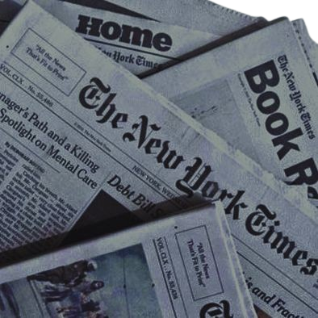
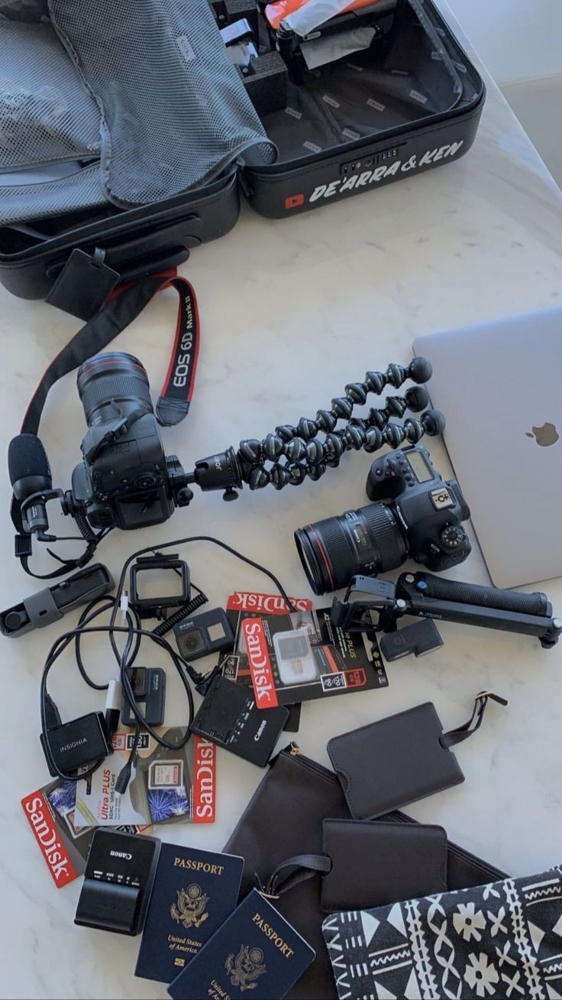

Hi! This Is How I Got Into Journalism
I see myself on the next 7 years as a person who jump into jurnalism field and holds the power as a writer. Since I liked to investigate things, I'll write a report about the things that should not be uncovered.
I was born to tell stories.
I want to write for a living.
And while i didnt know at the time, every small step I took back then led towards my fledgling career.
I joined the editorial team at Kompas Media , and quite qickly I went from editorial assistant to editor itself
On the paper we showcased independent shops (I took my wilful highschool for a makeover at a music store),
interviewed people and generally did amateur reporting which gave a great grounding for what was to come.

I learnt to sharpen my writing, edit ruthlessy, and understand the importance of a good headline.
Also (this is the beat I didn't realise) this experience helped populate my CV when I didnt have any 'real world' journalism experience to speak of.
Every day, I'll train myself to write 400 words and called it a page to build a better habit.
I'll spread my writing for people to comment and get a feedback from it. The last thing is, edit and rewrite my old script, and that's how I get better.
I became a journalist to come as close as possible to the heart of world. No one is me and that's my power